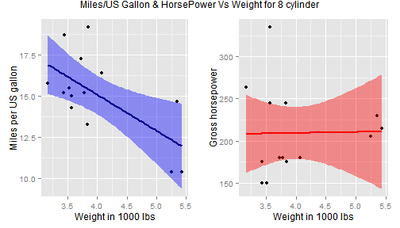

I am thankfull to all the instructors,TAs and other coursemates for the help regarding course through discussion forums.
Would be completely dishonest if I don't say I am doing this application and this presentation for the sake of course. I am thankfull to all the instructor
Having said that, the reason behind my simplistic approach of using mtcars is based on the fact that I have been really caught up in my life. In this scenario of momentary panic, I really couldnt come up with what I can use as an idea behind application development.
Thus instead of complexity of the calculation, I have displayed variety and volume of examples that were not discussed in the course by application.
Hope it still interest you all. https://ishanbhaway.shinyapps.io/ishanbhaway_mtcyl/
What all things I have done in the application
As mentioned in the inhouse documentation, Basically I have focused my any form of analysis particular to a cylinder type selection from a dropdown selection
Under the same selection based on cylinder category, I have showed top cars,the statistical summary of numerical data, best mileage car and highest power car(I know should have added the fastest car also!) All in the tab formation.
Combined with the above things I have added a scatter model with regression line on ggplot; based on the same linear regression model I am predicting the values of horsepower and miles per gallon based on weight input.
Prediction based on linear model
linear model used for hp(similar for mpg):
hp = A + B*wt + E
- A->intercept
- B->Coefficients
- E->residuals
- hp->horsepower
- wt->weight
using the predict function and lm as the model, I am getting the value of hp.We use slider for weight determination(range for weight is within the mtcars data)
##code for prediction based on linear model
##dataInp() is input from the application
nwt<-dataInp()$newwt
clcmpg<-predict(lm(mpg~wt,data=dataInp()$intd),nwt)
clchp<-predict(lm(hp~wt,data=dataInp()$intd),nwt)
Performance Graph Plot

I know the regression doesnt do justice right... that means there is still room for improvement...:) \[/alpha\]